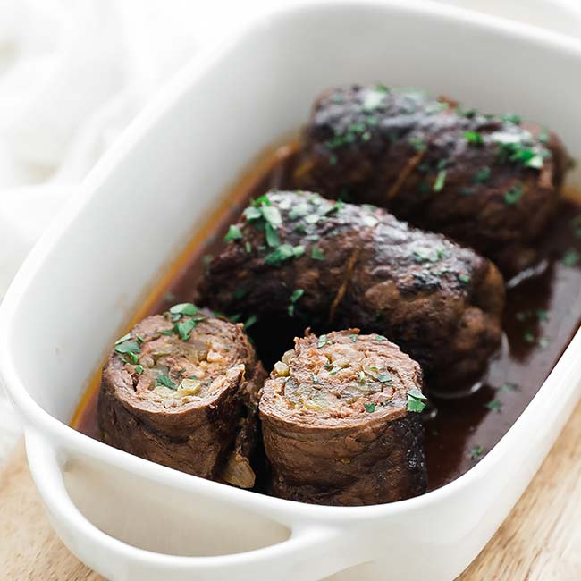

Braised beef roulades
The ultimate recipe! The only question: what's on the side?
Expense
135 Min.Difficulty
MediumThe ultimate recipe! The only question: what's on the side?
Expense
135 Min.Difficulty
Medium| 2 | gherkins |
| 2 | Onions |
| 1 Bund | Soup greens |
| 4 thin slices | Beef (from the leg, 150–175 g each) |
| Salt | |
| Pepper | |
| 4 TL | Dijon senf |
| 8 thin slices | smoked bacon |
| 1 THE | Flour |
| 2 THE | clarified butter |
| 1 THE | Tomato paste |
| 150 ml | Red wine (alternatively water) |
| 2 THE | Balsamic vinegar (as desired) |
| Roulade needles or kitchen twine |
1 / 9
Weigh out the ingredients and prepare them.
2 / 9
Quarter the gherkins lengthways. Peel the onions and halve them. Cut 1 onion into thin slices, dice the other 1 cm. Rinse the parsley from the soup greens and shake dry, pick off the leaves and chop. Wash and clean or peel the vegetables and dice them into 1 cm cubes.
3 / 9
Place beef slices between cling film (or in a cut freezer bag) and gently but firmly flatten with a meat mallet or small saucepan. The meat slices should then be approx. 3 mm thick.
4 / 9
Season the meat slices on both sides with salt and pepper and lay them out side by side on the work surface. Spread the slices of meat thinly with the mustard, place 2 slices of bacon lengthways on each and sprinkle with the onion strips and parsley.
5 / 9
Place 2 cucumber quarters across one narrow end of each slice of meat. Fold the long edges slightly inwards and roll up the meat slices from one narrow side - with the cucumbers as the core - tightly into roulades. Secure with roulade pins or tie together with kitchen twine.
6 / 9
Dust the roulades with a little flour. Melt 1 tablespoon of clarified butter in a casserole dish. Fry the roulades all over over medium heat and remove. Melt the remaining lard in the pot and fry the soup greens and diced onions for 5 minutes until golden brown. Stir in the tomato paste and roast for 1 minute. Deglaze everything with red wine and possibly balsamic vinegar.
7 / 9
Place the roulades back in the pot. Pour in approx. 400 ml of water so that the roulades are not completely covered by liquid. Cover the pot and gently stew the roulades over a low heat for about 1 hour 30 minutes, turning the roulades every now and then.
8 / 9
Remove the roulades from the sauce. Either leave the sauce as it is or pour the sauce through a fine sieve into a second pot and squeeze out the vegetables with a spoon. If you want, you can also strain the vegetables through the sieve to thicken the sauce.
9 / 9
In any case, bring the sauce to the boil again and season to taste. Arrange the sauce with the roulades on plates and serve. Mashed potatoes go best with this.